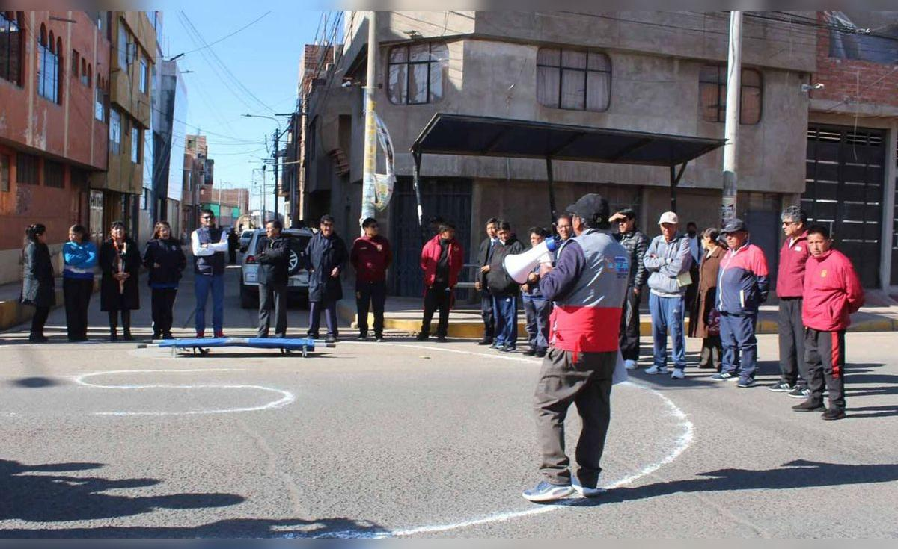

A las 10:00 de la mañana de este viernes 14 de agosto, una potente alerta sísmica rompió la calma en todo el territorio peruano. No se trataba de un terremoto real, sino del Simulacro Nacional Multipeligro 2026, organizado por el Instituto Nacional de Defensa Civil (INDECI), que por sexta vez consecutiva puso a prueba la capacidad de reacción del país frente a un escenario de desastre de gran magnitud: un sismo de 8.8 grados en la escala de Richter con epicentro frente a las costas de la región Lima.
El ejercicio, que se extendió por aproximadamente 15 minutos, movilizó a más de 12 millones de peruanos en los 1,874 distritos del país, según el primer reporte oficial del INDECI. Instituciones educativas, centros de salud, entidades públicas, empresas privadas y hogares participaron activamente en una coreografía ciudadana que buscó reforzar la cultura de prevención y evaluar los tiempos de respuesta ante una eventual catástrofe natural.
"El Perú es un país altamente sísmico. No es una cuestión de si ocurrirá un gran terremoto, sino de cuándo. Simulacros como este salvan vidas", declaró el jefe del INDECI, Carlos Benavides, durante la conferencia de prensa ofrecida al mediodía desde la sede central de la institución en el distrito de San Borja. "Hemos visto una participación masiva y, en líneas generales, una respuesta ordenada. Sin embargo, siempre hay lecciones que aprender y aspectos que mejorar", agregó.
Un escenario de alta complejidad: el "Gran Sismo de Lima"
El escenario planteado por INDECI para esta edición fue particularmente desafiante. Se simuló un terremoto de magnitud 8.8 con hipocentro a 35 kilómetros de profundidad, localizado a 90 kilómetros al suroeste del Callao. Este movimiento telúrico, de características similares al que devastó la ciudad de Valdivia en Chile en 1960, generaría una intensidad de grado IX en la escala de Mercalli en la costa central, lo que implica daños severos en infraestructura, colapso de edificios antiguos, interrupción de servicios básicos y, potencialmente, un tsunami con olas de hasta 6 metros en el litoral.
"Hemos trabajado con el Instituto Geofísico del Perú (IGP) y el Centro Nacional de Estimación, Prevención y Reducción del Riesgo de Desastres (CENEPRED) para construir un escenario lo más realista posible", explicó Benavides. "La magnitud 8.8 es el peor escenario posible para la costa peruana, y precisamente por eso debemos ensayarlo".
El simulacro contempló tres fases bien definidas: alerta, evacuación y evaluación. Durante los primeros 30 segundos, las sirenas sonaron en todo el país y los ciudadanos debieron identificar las zonas de seguridad. Posteriormente, se activaron los protocolos de evacuación hacia los puntos de reunión designados. Finalmente, los comités de defensa civil realizaron un conteo de personas y reportaron incidencias a la sala de crisis del INDECI, que operó con un centro de comando descentralizado conectado con todas las regiones.

Balance regional: cifras y participación
El informe preliminar del INDECI, difundido a las 13:00 horas, arrojó los siguientes datos: 12,346,872 participantes en todo el país, lo que representa aproximadamente el 37% de la población nacional. Lima Metropolitana concentró la mayor cantidad de inscritos, con más de 4.2 millones de personas, seguida de las regiones de Arequipa (1.1 millones), La Libertad (980 mil) y Cusco (720 mil).
En el ámbito educativo, 32,845 instituciones entre escolares, institutos y universidades se sumaron al ejercicio. El Ministerio de Educación reportó que el 94% de los colegios públicos y privados participaron activamente, con tiempos de evacuación que promediaron los 4 minutos y 20 segundos, una mejora significativa respecto al simulacro anterior, donde el promedio fue de 5 minutos y 10 segundos.
El sector salud, por su parte, desplegó 1,200 brigadas de respuesta rápida y activó 87 hospitales de contingencia en todo el territorio. El ministro de Salud, Alberto Tejada, señaló que se simularon 4,500 heridos de diversa gravedad, incluyendo fracturas, traumatismos y casos de crisis nerviosas, con el objetivo de poner a prueba la capacidad de triaje y atención en escenarios de alta demanda.
Lecciones aprendidas y desafíos pendientes
Pese al balance positivo, el simulacro también dejó en evidencia aspectos críticos que requieren atención inmediata. Las zonas de mayor vulnerabilidad continúan siendo los asentamientos humanos ubicados en laderas de cerros y riveras de ríos, donde el acceso es limitado y las viviendas están construidas con materiales precarios.
"En distritos como San Juan de Lurigancho, Villa El Salvador y Comas, los tiempos de evacuación fueron más prolongados debido a la densidad poblacional y la falta de rutas de escape claras", señaló la coordinadora de la Plataforma Nacional de Gestión del Riesgo de Desastres, María Isabel Rodríguez. "Es allí donde debemos focalizar nuestras campañas de sensibilización y mejorar la infraestructura de los puntos de reunión".
Otro de los temas que generó debate fue la capacidad de respuesta de las telecomunicaciones. Durante los primeros 10 minutos del simulacro, se reportó congestión en las redes móviles, lo que dificultó la comunicación entre los centros de operaciones de emergencia. El Ministerio de Transportes y Comunicaciones informó que se está trabajando en un sistema de alerta temprana alternativo que utilice radio y tecnología satelital para garantizar la transmisión de información en situaciones de crisis.
Participación ciudadana: el factor humano
Más allá de las cifras y los protocolos, el simulacro fue también un ejercicio de solidaridad y conciencia colectiva. En el distrito de Miraflores, vecinos organizados ayudaron a adultos mayores y personas con discapacidad a evacuar sus viviendas. En el Callao, pescadores artesanales simularon el arribo a puerto seguro ante la alerta de tsunami. En Arequipa, estudiantes de la Universidad Nacional de San Agustín realizaron prácticas de primeros auxilios en una carpa instalada en el campus.
"Lo más importante es que la gente entienda que la prevención no es una tarea exclusiva del Estado. Todos somos parte de la respuesta", reflexionó el alcalde de Lima, Rafael López Aliaga, quien supervisó personalmente la evacuación en el Cercado de Lima. "Hemos visto a ciudadanos comprometidos, que saben qué hacer y dónde ir. Eso es lo que nos da tranquilidad".
DATOS CLAVE DEL SIMULACRO NACIONAL MULTIPELIGRO 2026
El contexto sísmico del Perú: una realidad ineludible
El Perú está ubicado en el denominado Cinturón de Fuego del Pacífico, una de las zonas de mayor actividad sísmica y volcánica del planeta. La placa de Nazca se hunde bajo la placa Sudamericana a una velocidad de aproximadamente 7 centímetros por año, generando una acumulación de energía que se libera periódicamente en forma de terremotos.
Según el Instituto Geofísico del Perú (IGP), en los últimos 500 años se han registrado al menos 15 terremotos de magnitud superior a 7.5 en el territorio nacional. El más devastador de la historia reciente fue el terremoto de Áncash de 1970, de magnitud 7.9, que provocó la muerte de más de 70,000 personas y la destrucción total de la ciudad de Yungay.
Los especialistas coinciden en que la costa central, especialmente la zona que abarca desde Chincha hasta Huacho, es la que presenta mayor probabilidad de un sismo de gran magnitud en el corto o mediano plazo. "No podemos predecir cuándo ocurrirá, pero sí podemos prepararnos. Ese es el objetivo de estos simulacros: reducir la vulnerabilidad y salvar vidas", enfatizó la sismóloga del IGP, Patricia García.
Hacia una cultura de prevención permanente
El Simulacro Nacional Multipeligro de este 14 de agosto no es un evento aislado. Forma parte de una estrategia integral del Gobierno peruano para instaurar una cultura de prevención en todos los niveles de la sociedad. Desde el año 2020, INDECI ha impulsado campañas de sensibilización en escuelas, mercados, transporte público y medios de comunicación, con el objetivo de que cada ciudadano conozca las rutas de evacuación y los puntos de encuentro en su comunidad.
"No basta con hacer un simulacro una vez al año. La preparación debe ser constante", sostuvo el jefe del INDECI. "Por eso estamos trabajando en la implementación de un sistema de alerta temprana que llegue a todos los teléfonos celulares del país, similar al que ya operan países como México y Japón. Esperamos tenerlo operativo en el primer semestre de 2027".
El día de hoy, el Perú demostró que está dispuesto a enfrentar su realidad sísmica con responsabilidad y organización. Millones de ciudadanos evacuaron, coordinaron y se apoyaron mutuamente en un ejercicio que, más que una prueba técnica, fue una afirmación de compromiso colectivo con la vida y la seguridad.
El informe final del simulacro será presentado en los próximos días, con un detalle pormenorizado de los tiempos de respuesta, las incidencias reportadas y las recomendaciones para futuras ediciones. Mientras tanto, las autoridades hacen un llamado a la ciudadanía a no bajar la guardia y a mantener vigentes los planes de emergencia en sus hogares y centros de trabajo.
"Hoy hemos dado un paso importante. Pero el verdadero simulacro será cuando llegue el día en que la tierra realmente se mueva. Y ese día, cada segundo de preparación contará", concluyó Benavides con tono grave, cerrando así una jornada que quedará registrada como una de las movilizaciones preventivas más grandes en la historia del Perú.